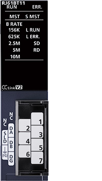
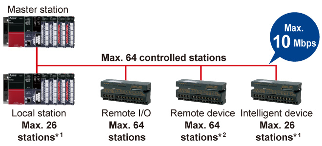

Controllers MELSEC iQ-R Series Product features -Network-

CC-Link system master/local module
The module enables high-speed transmission of bit data such as ON/OFF status and word data such as analog information between devices.

Features<sup>System configuration that meets control requirements</sup>
- Extensive partner devices
- CC-Link incorporates many different field devices that can be configured into a wire-saving communications network
- Using the remote device net mode, it is possible to connect up to 64 remote devices, such as analog I/O modules

- *1.Remote net mode
- *2.Remote device net mode
Specifications<sup>CC-Link system master/local module specifications</sup>
| Item | RJ61BT11 |
|---|---|
| Compatible network | CC-Link |
| Communication speed (bps) | 156k/625k/2.5M/5M/10M |
| Maximum stations per network*3 | 65 |
| Network topology*4 | Bus (RS-485) |
| Connection cable | Ver.1.10-compatible CC-Link dedicated cable |
| Max. station-to-station distance (m) | - |
| Overall cable distance (m) | 100 (10 Mbps)…1200 (156 kbps) |
| Maximum link points per network | |
| Remote input (RX), remote output (RY) | 8192 points |
| Remote register (RWr, RWw) | 2048 points |
| Link relay (LB) | - |
| Link register (LW) | - |
- *3.Includes a master station.
- *4.Please use a managed Ethernet switch supporting CC-Link IE TSN (class B) recommended by the CC-Link Partner Association for the CC-Link IE TSN master/local module (RJ71GN11-T2) and CC-Link IE TSN Plus master/local module (RJ71GN11-EIP).